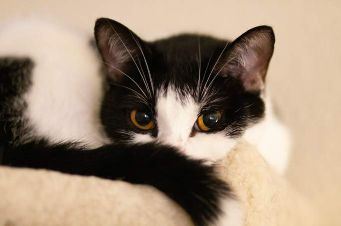
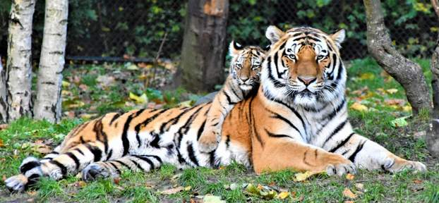

Fika med omtanke
Visste du att en kopp kaffe hos Chokladkatten kan bidra till omtanke som sträcker sig lite längre än till fikabordet?

Kattvärme
Vi samarbetar med Kattvärme, en lokal gemenskap som vill hjälpa hemlösa katter att få mat, trygghet och en andra chans. En del av våra intäkter går till deras arbete, och ibland samlar vi också in sådant som behövs som filtar, kattmat och leksaker.

Rand i sikte
Vi arbetar dessutom tillsammans med Rand i sikte, en organisation som engagerar sig i att skydda tigrar och deras livsmiljöer.
Vårt mission
För oss hänger omtanke ihop: om djur nära oss och långt borta, om människor som behöver stöd och om platserna vi delar med varandra. Därför vill vi gärna bidra till initiativ som gör skillnad, stort som smått. Chokladkatten är också en plats där gemenskap får växa. Vi vill förmedla kontakt mellan människor som vill hjälpa till och verksamheter som behöver en extra hand. Genom små insamlingar, temafikor och andra evenemang hoppas vi kunna samla gäster kring något gott och något gott att göra. Kanske träffar du någon ny över kaffet, hittar ett sätt att engagera dig eller får med dig en idé hem. Det behöver inte alltid vara stort för att betyda något. En fika, en vänlig pratstund eller ett litet bidrag kan bli en del av något större när många hjälps åt. Hos oss får omtanken gärna ta plats, sida vid sida med kaffekoppen och dagens söta överraskning.